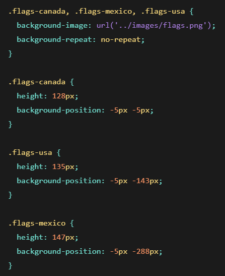

Research on CSS Sprites
What are Sprites?
In Web Design, sprites are a collection of multiple images that are used compressed into one file. These images are then put into an blank canvas and positioned by x and y coordinates. The reason they are compressed into one file is to optimize website performance. Depending on how large or little the traffic is on a website will affect the speed. Speed of a website can affect how fast the content of the page will load.
What causes websites to be slow?
Lets take for example, carrying a backpack. When you add more items in your backpack, it becomes heavier, causing you to slow down due to the weight. But when you start to lower the ammount of weight you carry, you become faster. Just like a backpack, the more items you have on a website, the slower it will be. That's why the use of sprites and how they have the ability to compress image files into one is super helpful in giving a speed boost to loading websites in. Not only does it reduce the number of files used, but it will also lower the ammount of storage the file takes.
Why should sprites be used?
Well, for one, we know that they can be used to optimize the speed of websites. Sprites reduce the number of HTTP requests that are used when loading websites by combining all the image files into one. If your website has a large gallery or just has a purpose to display images, sprites would be essential in order to reduce loading times.
How to create sprites?
You now might be wondering: how do we combine all these image files into one? We first have to create our image. Our image could be drawn by you or be used with proper copyright usage. Then in you CSS file, you should type do the following:
Follwoing this example, we can see that we first need to start off by deploying the image using "background-image" followed by the file link. We then follow by telling the program whether it should repeat or not. After doing so, we need to set the proper positions for each image in order to have them displayed properly on the website.
Other ways to use sprites
After learning about sprites, you might want to learn about more ways to have fun with them! https://www.w3schools.com/ has a lot of cool examples of how you can play with sprites. From this website, one of the awesome examples they have is creating a hover effect with sprites. For example, when you press the refresh button on your browser, it resets the current website you're on. But, do you also realize that the refresh button is also just a sprite? Isn't that just cool!